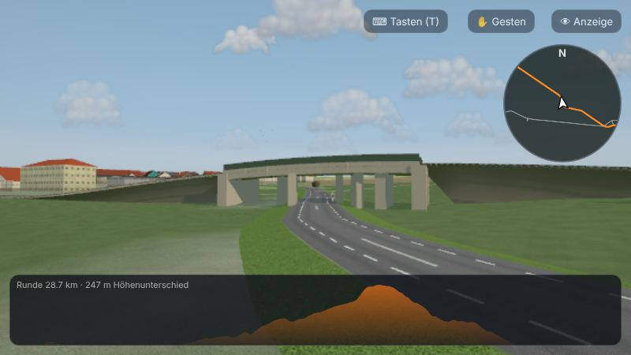
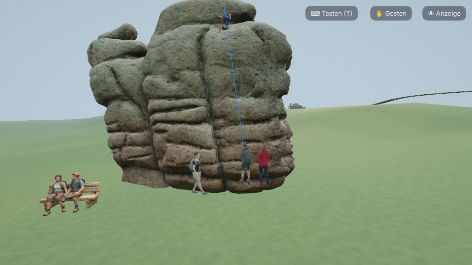
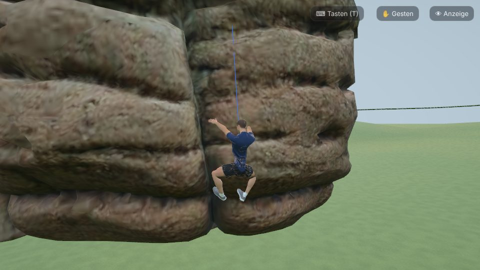
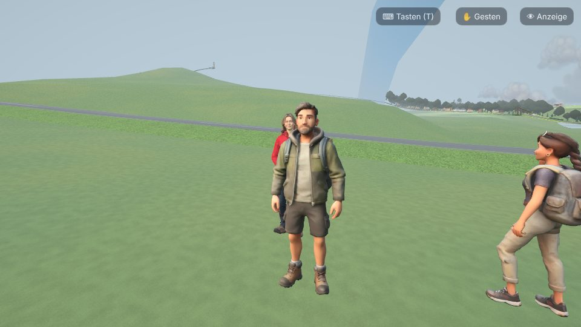

Parks und Rasen am Ring nach OSM, Fuß- und Radwege sichtbar, lockere Baumgruppen statt Pflaster

Bahnübergang Hörnitzer Straße: Halbschranken unten, Lichtzeichen rot, Läutewerk; der Fahrer hält davor

Regionalzug fährt durch (zweiteiliger Triebwagen, ohne echtes Logo)

Eisenbahnbrücke über die B 96 Neusalzaer Straße (nach OSM)

Eisenbahnbrücke über die Oststraße in Zittau

Sicherer am Seil, Rucksack-Wanderin und Marlies jetzt alle mit Skelett

Kletterer jetzt als Figur mit Skelett, greift und tritt abwechselnd

Am Kelchstein kann man neben der Wanderin anhalten und per Sprechknopf mit ihr reden

Jetzt zufällig platziert, alles steht sauber auf der Straße, Polizist als Figur mit Skelett

Von links: Spaziergängerin stehend, Läufer beim Gehen, Spaziergängerin beim Gehen, Läufer beim Rennen

Links Gehen 5 km/h, Mitte Joggen 11 km/h, rechts Rennen 19 km/h